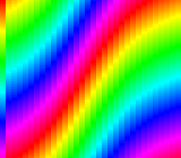

|
OpenSNES
Modern Open-Source SNES Development SDK
|
|
OpenSNES
Modern Open-Source SNES Development SDK
|
Family 2 (Backgrounds) · the offset-per-tile modes (2/4/6), after mode2.

Mode 4 gives you an 8bpp (256-colour) BG1, a 2bpp BG2, and — like Mode 2 — BG3 as an offset table that lets every 8-pixel column scroll on its own. The difference is the table: Mode 4 reads one row of it, so each column gets one word, either a vertical offset or a horizontal one.
BG1 here is a diagonal 256-colour gradient. A sine wave is written into the offset row every frame as vertical words, and the columns ripple; press A and the same wave goes in as horizontal words, and the columns slide sideways in 8-pixel steps.
Open mode4.sfc in luna (or any SNES emulator) and press A.
tools/luna-test/manifests/backgrounds_mode4.toml checks the mode and BG3VOFS, the vertical words at frame 100 and the horizontal words after A ($2008, $2010… in VRAM), and that the row is uploaded in blank.
| Module | Purpose |
|---|---|
| console | System initialization, setMode, WaitForVBlank |
| dma | Palette, tiles, map and the offset row |
| background | BG1 and BG3 bases, BG3 scroll |
| input | The A button |
| math | fixSin for the wave |
| tile | The 8bpp tiles, built from pixels |